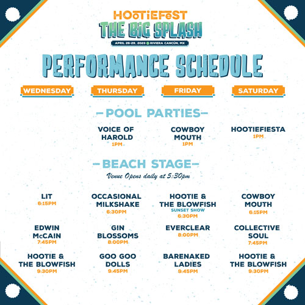
The 2023 schedule was every bit as amazing as last year's.

A sand sculpture of the Hootiefest logo - amazing!

The stage, all set up and ready for action.
My poor sister ran into flight delays and difficulties on the first day. Instead of arriving at 3pm, she got in around 10pm instead. And during the trip she also got a stomach bug, so that poor girl spent a miserable evening in travel hell instead of seeing the Wednesday night show.

The first act was Lit. His music is a little too hard for my taste and I was busy informing the transportation folks about Desirae's flight delay, so I only heard the end of his show. I was surprised that I enjoyed it as much as I did, he put on a good show - very high energy.
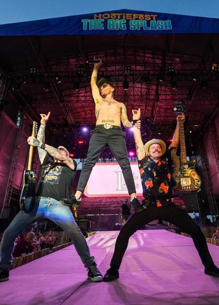
His show even included some cheerleader-style acrobatics.

Up next was Edwin McCain. He's a long-time friend of the Hootie guys, as a fellow South Carolinian. He put on a great show, giving lots of funny commentary between songs. He jokes that you are almost guaranteed to hear his song, "I'll Be" on the easy listening playlist of every grocery store and Home Depot you visit.

Darius came out for one of their two duet songs. They played, "Solitude" and did a beautiful job on it

Mark Bryan making one of many guest appearances.
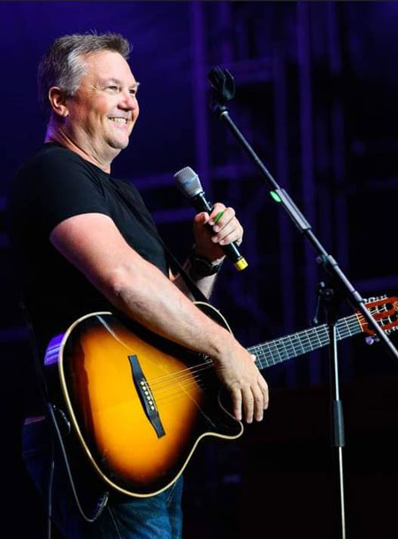
Hootiefest made a lot of their professional photos available to the public, so I am sharing some of those on this page as well.

Mark Bryan & Edwin McCain - catching some air!
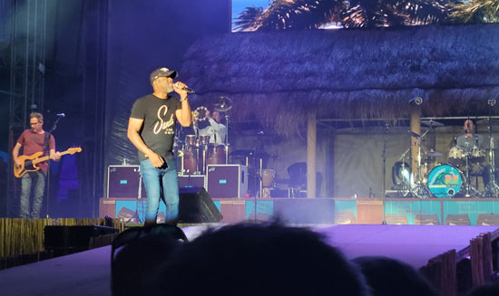
The headliner for the evening was, of course, Hootie & the Blowfish. They were incredible, as always.
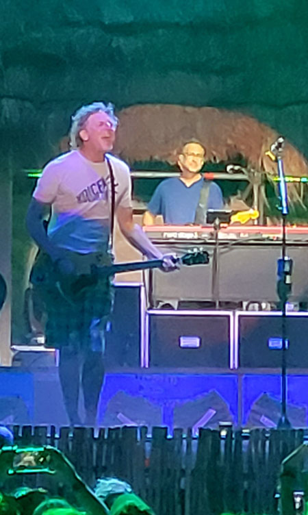
In the background you can see "VIP Lee", who Desirae and I consider to be a friend. We took a backstage tour from him once at a Darius Rucker concert in Arkansas and he was just the nicest man. We always cheer for him now.

Professional shot of the first night's concert.

Soni, the drummer. I read his autobiography "Swimming With the Blowfish" twice in the past year, he comes across as a very likable person

Mark Bryan is very energetic, and hates to wear shoes.

Darius sang a few of his country songs, this was during, "Alright" - a great song.
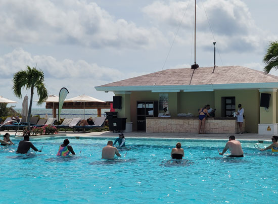
Thursday morning Desirae was still feeling sick, so I roamed around the resort on my own. Foryears I did a spin class 4 days a week, so it was a hoot to see this variation on spinning - they put the bikes down in the water!

Soni gave an author talk and book signing on Thursday morning. He was so funny! He also sang two songs that were very good.
He sang, "Change" a song he wrote on the 2019 HBF album,"Imperfect Circle" (which is fantastic, BTW, you should own it.)
He also sang Sesame Street lyrics for "Hold My Hand" that they used when they appeared on the show. It was a fun event. And because I know you're wondering, here are some of the lyrics to the Sesame Street version of "Hold My Hand":
When you're on the corner, and you want to cross the street, one thing to remember, before you move your feet. You need a little help, from a grown-up friend, to cross the street the right way, take them by the hand. 'Cause I am here for you. I wanna cross with you. Hold my hand...
And if that's not enough, here's a link to the video of the performance, for which Soni said they were very hung-over.

Each afternoon there's a pool party concert at 1pm. On Thursday it was, "Voice of Harold" which is a REM Tribute band that Mark Bryan put together. I was off to the left in this picture, I think just outside of the frame.
REM fans ready for action. I need to study up on that band. The Hootie guys absolutely love REM, but I've never really listened to their music. I was clueless during this concert!
This is the pool area of the "Sunset" portion of the resort. There are two other areas in the same resort as well as a golf course.

Here are some shots of the amazing sweets that are always available - truffles and pastries and cakes, oh my!

The gelato case, located next to the custom-made crepe station & coffee bar.
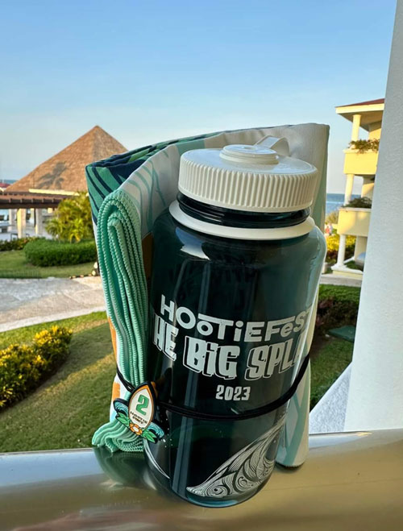
I "borrowed" this photo from Jim & Alicia, festival friends that we made during the week. The festival always gives out nice swag, this year it was a microfiber towel which I love too much to ever use, a great water bottle, and a year pin
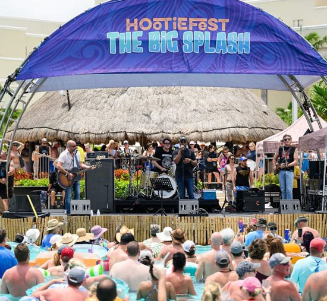
Darius came out to guest on a couple of songs.
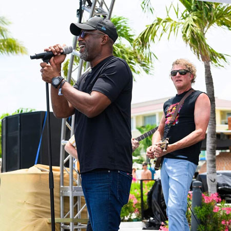
I think he sang, "Losing My Religion", a favorite cover for the Hootie guys.

The entrance gate into the concert venue area.
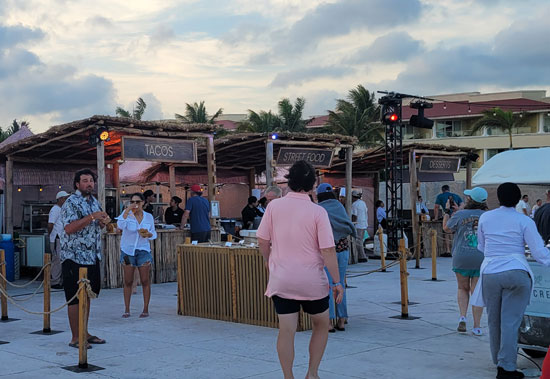
There are eight food truck-style huts with a rotating menu each night so that you can quickly grab some grub while enjoying the music. And they have so many bathrooms that I've never, ever, had to wait for a stall. That part is amazing to me in such a big venue.
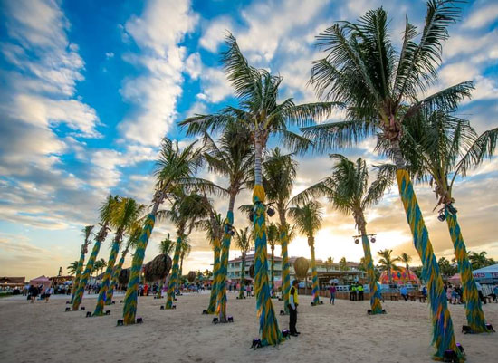
Beautiful evening, ready for some beautiful music!

Occasional Milkshake is another band of Mark Bryan's. I like this band a lot. The guy on the far left is Hank Futch. He is also in a South Carolina band called the Blue Dogs and is a great musician. They get such a kick out of making fun of his name on stage, "Thank you very Futch!"Here Dean Felber, the bass player for Hootie & the Blowfish is guesting on a beautiful song that Dean co-wrote with Hank Futch, "Waltz Into Me"

Darius made a guest appearance and sang the Dwight Yoakam song, "Little Ways." So fun! They told that Darius used to play that CD on endless repeat in their early touring days
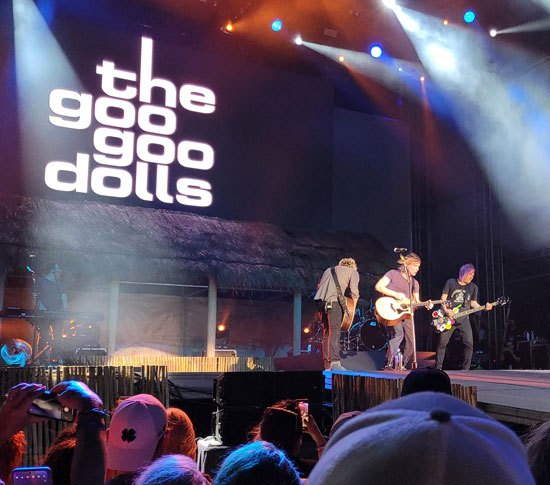
Professional shot of Dean & Mark. Dean has always been one of my favorite guys in the band, he's one of those super-quiet guys who you just know would be hilarious if you could get him to talk.

Great professional shot of Darius with Occasional Milkshake.
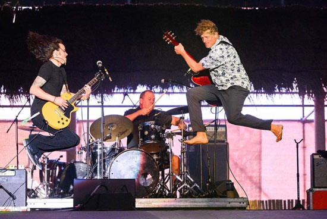
The "old man" Mark Bryan is catching a LOT more air!

Edwin McCain making a guest appearance. It was a fun show.

The drummer for Occasional Milkshake had a bit too much of something that night and put on quite the show for his one song out from behind the drums. You can see how Hank is laughing hard.

Fred LeBlanc, the driving force of Cowboy Mouth, came out for a guest song and brought along a very special guest. This boy has been the stage hand for Cowboy Mouth for many years, but was quitting after this event to do something else. Fred promised him a chance to perform one song on the Hootiefest stage and he rocked the house!
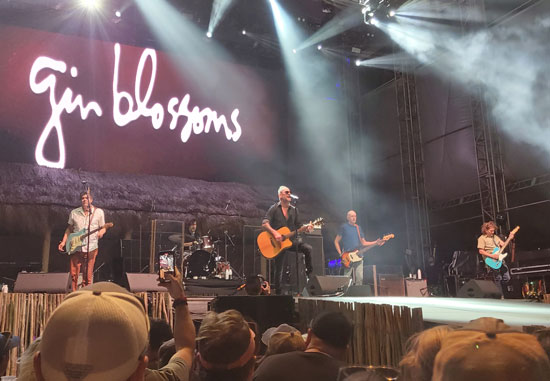
Next was the Gin Blossoms, an awesome show. I'd forgotten they had so many really good songs. This lead singer was Robin Wilson, the band's original lead singer died in 1992. Robin did a great job.

This was the only night I got up very close to the stage, in front of the cat walk. Turns out it hurts your neck to look up that high all night long, so I got behind the cat walk after this
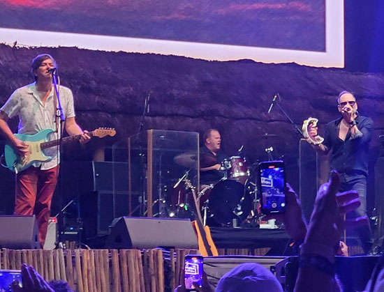
Fred LeBlanc from Cowboy Mouth, making a guest appearance. He's been friends with the Gin Blossoms almost as long as he's been friends with the Hootie guys.

Darius making a guest appearance with the Gin Blossoms. He sang, "Hey Jealousy" with them.
Next up, the Goo Goo Dolls. They are strange looking dudes, but man, they put on a heck of a concert. They have some really great songs.

The Goo Goo Dolls closed out another great night of music.
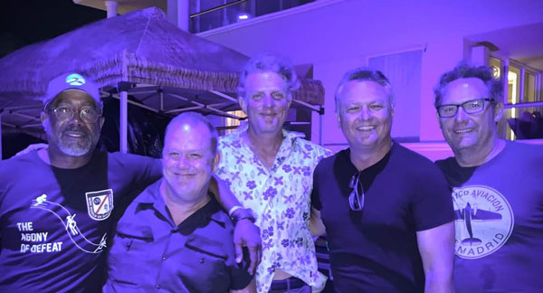
Fred posted some behind-the-scenes shots of him with his musical friends. Here it's 3 of the Hootie guys and Edwin McCain.

Friday morning I got up early to run the, "Only Wanna Run With You" 3K race that was put on as part of the event. It was hot & humid but the medal was awesome!
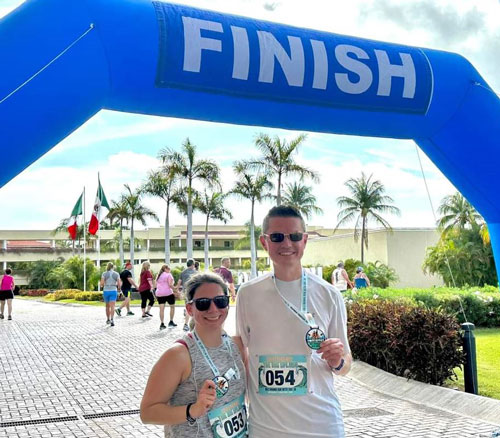
Our festival friends Alicia & Jim ran it too. I stole this picture from their Facebook post.

After the race, Desirae was finally ready to leave the hotel room! The poor thing missed the first 2 days of a 4-day event, but she was finally ready to join the land of the living

You know you're not in the USA if a sign like this is required.

The dancing ice cream man is a fixture at Hootiefest. He's a huge flirt and likes to get the girls to dance with him while he serves up amazing ice cream by the pool.

The Friday pool party is one of the highlights each year. Cowboy Mouth is the perfect band for an in-pool concert! Here we are with our red spoons at the ready.

I was front & center as usual! Well, about 5 people back, can't put too much strain on my neck!

John Thomas Griffith - he and Fred are the only two original band members still hanging in there.


That night, HBF kicked off the night with a "Sunset Show", which was one of the best shows for me. This was their non-hit songs and favorite cover songs. They allowed fans to submit song requests - and mine got chosen! It was, "What Do You Want From Me Now" I loved every second of hearing that performed live. It was like they were singing just to me!
Super fan Christine Cardus took a video, which I will watch again and again. I was standing very close to her too, so it's even the view I had of the show.
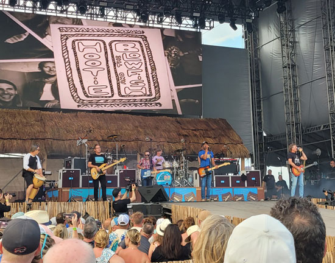
They did so many great covers and seemed to be having the best time, that show was pure fun.
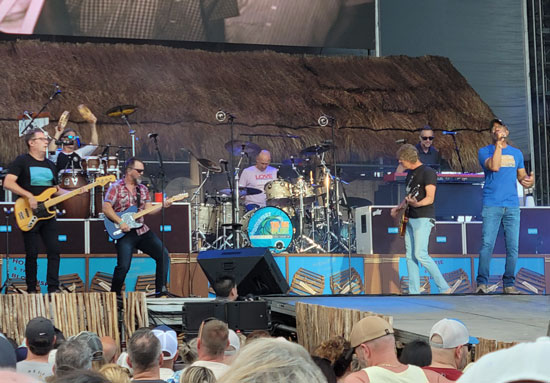
They did Mustang Sally, Keep Your Hands to Yourself, The Joker (Steve Miller Band), and You Never Even Call Me By My Name - which was a blast!

Edwin McCain and Mark Bryan dancing on, "You Never Even Called Me By My Name"I always thought the title of that song was, "The Perfect Country Western Song" but whatever it's called, it was so fun to experience.
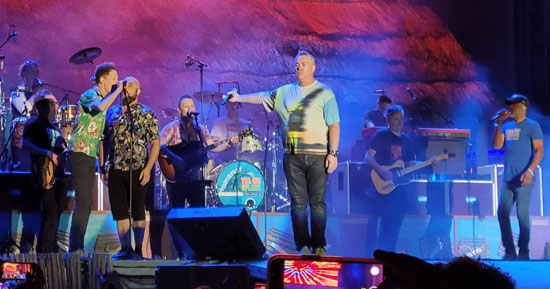
The guys from Barenaked Ladies came out to sing, "With a Little Help From My Friends" which is a song they always did together during their joint 2019 Group Therapy tour.

Next was Everclear, and he is really just too hard for my taste, so we went back to the room. This is our view of the venue from our room, so we could still hear the music from there.

Back at the venue for the never-to-be-missed Barenaked Ladies - they are so talented and so hilarious at the same time.

Here they had a "guest-a-palooza" with guests including members of The Gin Blossoms, the Hootie guys, and Fred LeBlanc. It was chaos, in a good way.
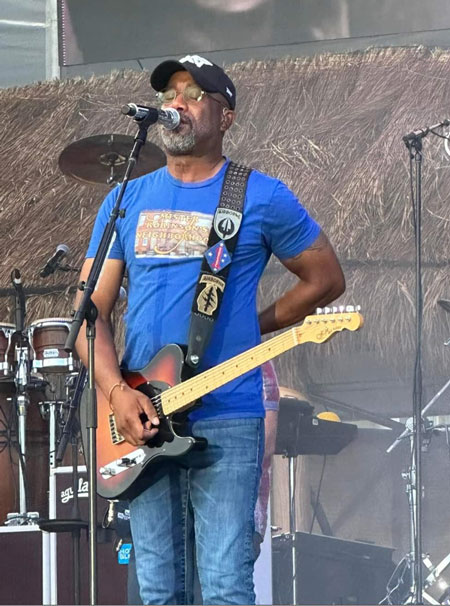
Professional shots from the evening.

Dean Felber, doing his bass thing.


Getting by with a little help from friends
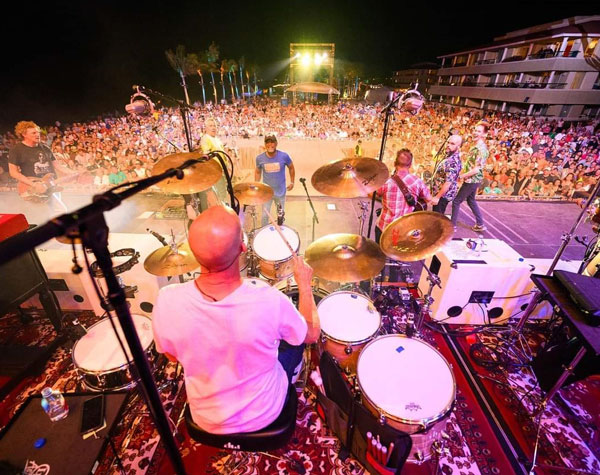

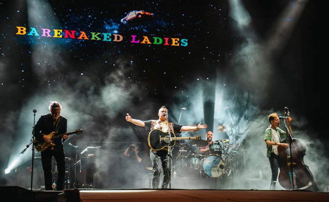
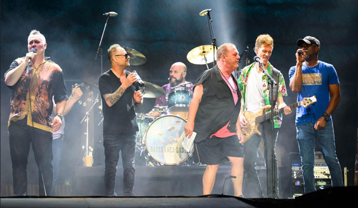


It was over too soon! What a great night.

Fun with languages!
The last day, Saturday, we booked an excursion which was intended to be a snorkeling trip. Unfortunately, the winds were too strong so they just dumped us out on Isla Mujeres. We wandered around town and walked to a pretty beach. Wish we could have stayed at the resort instead!
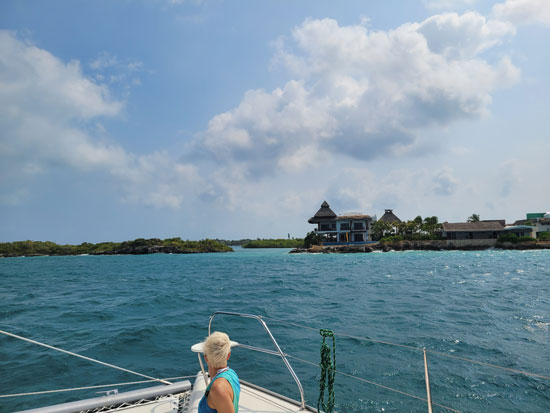
Coming into Isla Mujeres

A beautiful beach we hung out at on the north side of the island.

Street scene.
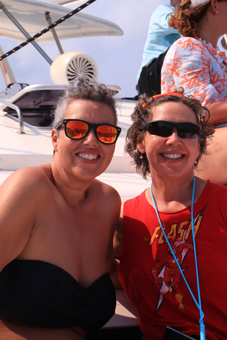
On the boat.

Waiting in line to get in to the last night of concerts. A storm rolled in that caused a delay of about an hour. This was the only night we stood in line to get in, because everyone had been waiting for the storm to pass.

Front & center at the end of the cat walk - a prime spot!
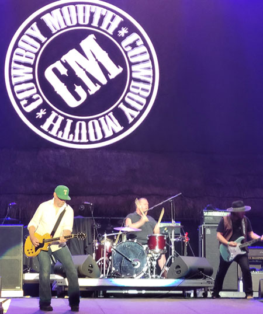
Cowboy Mouth, part 2. Since they had already played a show on Friday, they did a super short set to make up for the storm delay. They were still in fine form.
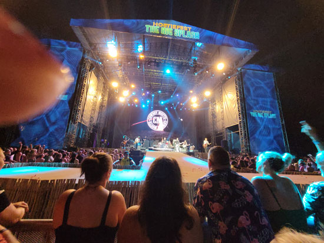
The name of the band is...
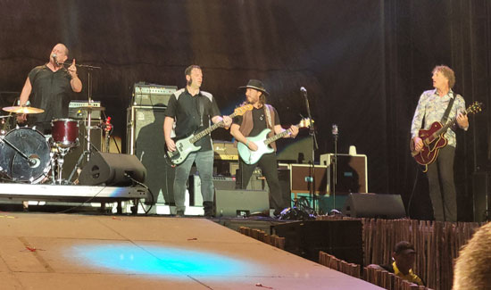
Mark Bryan guesting and Fred telling us how it's going to be.

Red spoon detritus on stage, while Fred tells everyone to, "Get down on the ground" Let me tell you, that was a lot easier when I was in my 20's! Fred should check on the current age of his audience before expecting us to be able to jump up on command.There was a huge, collective groan as we all tried to pop up out of our crouch.
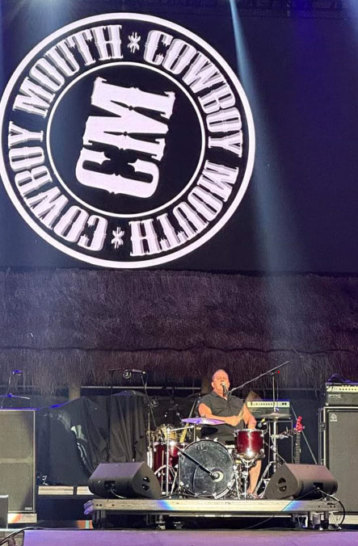
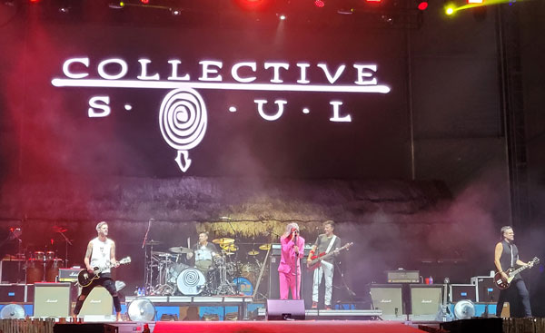
Next was Collective Soul - a band who has kept cranking out hits for decades. I've always wanted to see them live and they did not disappoint. Great show!
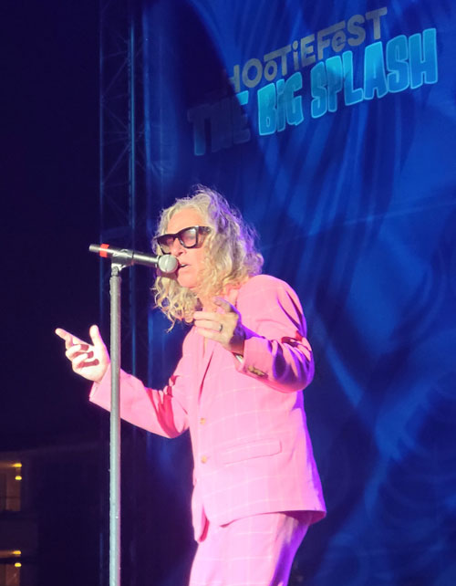
Don't let the funny outfit fool you, he didn't take himself too seriously. They came out on the cat walk a lot so we had some great views.
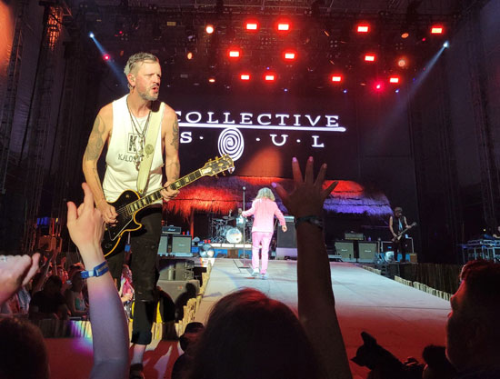
Jesse Triplett, the lead guitarist, thrashing one out.

Jesse and the bass player, Will Turpin having some dueling guitars.

Lead singer Ed Roland with Robin Wilson, the current lead singer of Gin Blossoms
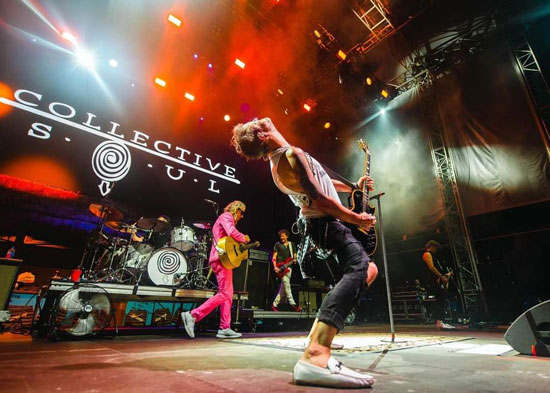
Pro shot of the antics on stage.

Our friends Jim & Alicia took this selfie which shows the backs of Desirae's and my heads.
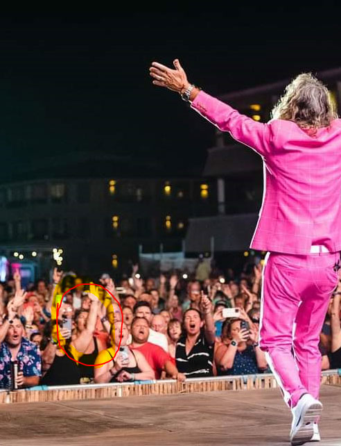
You can see Desirae in this pro shot of the show. I circled her in red with yellow highlight.
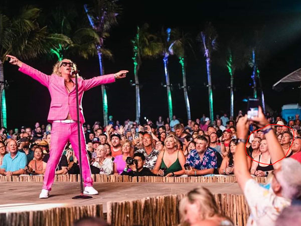
You can see both of us in this picture, far right, circled in red. Not great shots of us, but good of Ed Roland.

Taking a bow after a job well done.
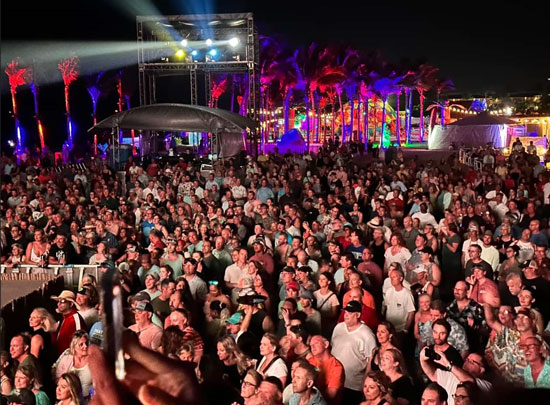
A shot of the crowd taken from the stage. Ready for the grand finale - Hootie & the Blowfish!
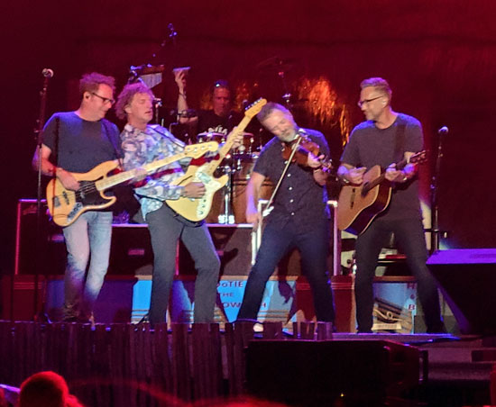
It's not every band that can play for the same crowd night after night and still blow you away, but these guys are up to the challenge. Here our "friend" VIP Lee gets to come out from the keyboard for a change and move around on stage. Lee is on the far right.

Later in the evening, Soni came out from the drums to play keyboard and Lee gets to roam free on stage once again.

Darius, working the crowd on the catwalk. I took this shot.
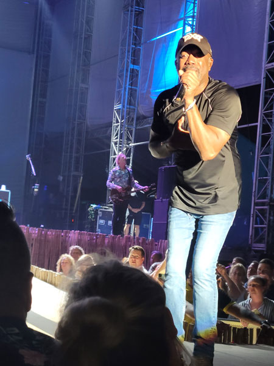
This one is from the professionals.

This shot shows Desirae & I, both taking pictures since he doesn't come out on the catwalk very often.
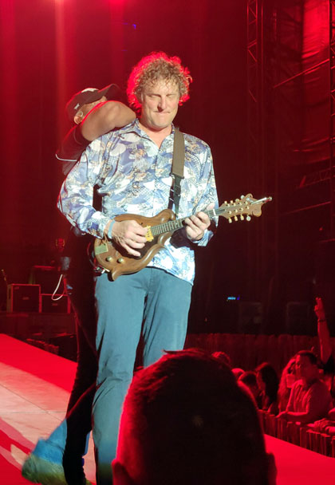
Darius was taking a break by leaning on Mark Bryan while he played mandolin.
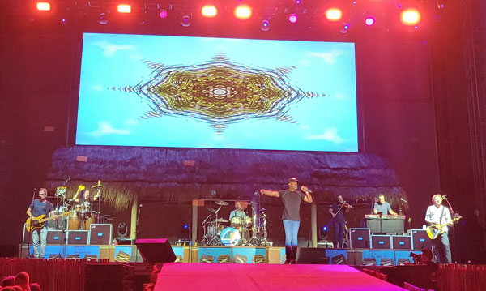
My view of the night.
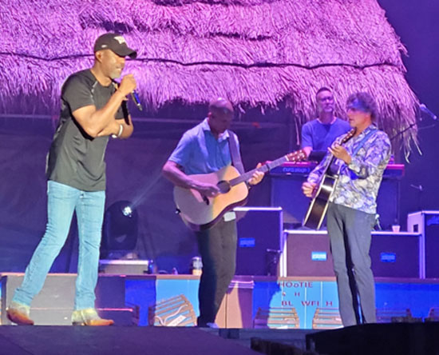
Soni getting out from behind the drums again, to play guitar this time. They played, "Get Down On It" near the end and it was great fun!

A professional shot of that scene I showed earlier where the guitar guys were jamming together.

Great shot of Dean thrashing the bass.

I can't believe the music is over! It happened too soon!

Hootiefest 2023 is in the books.
If you'd like to see videos of the festival, super fan Christine Cardus has a playlist on YouTube.

Here's the playlist from that final night.
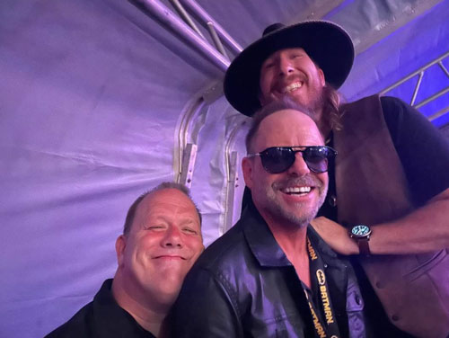
Fred LeBlanc backstage with Robin of Gin Blossoms and bandmate Matt Jones.

Our festival friends, Alicia & Jim
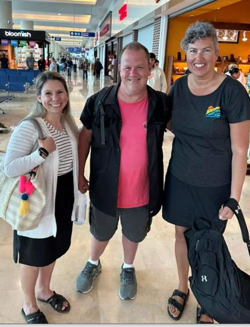
Desirae & Alicia with Fred in the Cancun airport. She also got to talk to VIP Lee, and....

Jim "Soni" Sonifeld, the Hootie drummer! I'm so happy she had these fun experiences. It helped make up for her missing out on the start of the event.